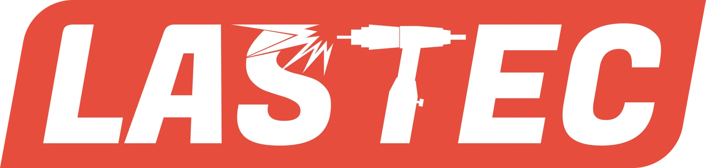
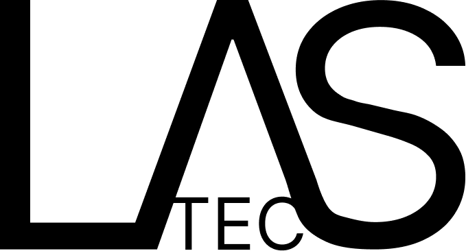
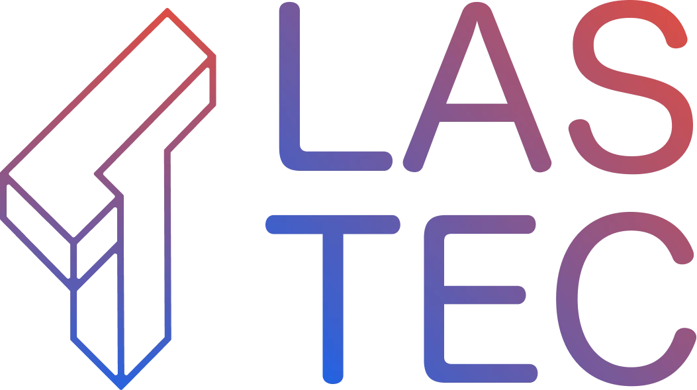
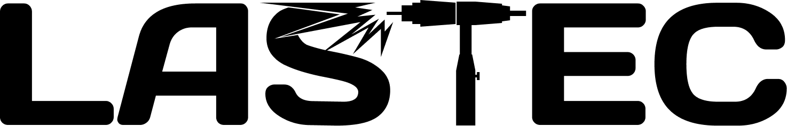
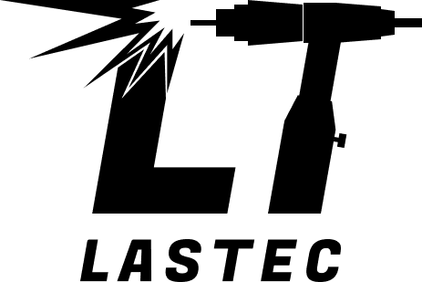

Lastec · Visuele identiteit
Vakwerk.
Ook in het beeldmerk.
Van een eerste letterstudie tot een uitgesproken woordmerk. Een selectie uit de zoektocht naar een eigen gezicht voor Lastec.

- Klant
- Lastec
- Sector
- Laswerk & metaal op maat
- Werk
- Logo & visuele identiteit
De klant
Oog voor detail.
Gemaakt om te blijven.
Lastec uit Wetteren maakt laswerk op maat in staal en inox. Van leuningen en balustrades tot interieur en industriële toepassingen: het werk vertrekt vanuit de wensen van de klant, met aandacht voor afwerking en duurzame verbindingen.
Ontdek LastecDe verkenning
Eén naam.
Verschillende richtingen.
Een logo ontstaat door mogelijkheden naast elkaar te zetten. Deze concepten verkennen lettervorm, constructie en het gereedschap van het vak.

De naam als vertrekpunt.
Grote lettervormen en een compact contrast tussen LAS en TEC. Een eerste studie in verhouding en leesbaarheid.

Gebouwd uit lijnen.
Een ruimtelijk lijnsymbool naast een gestapelde naam. Geometrie en kleur geven deze richting een technisch karakter.

Het vak in de letters.
De lasvonk en lastoorts worden deel van de naam. Een directe verwijzing naar wat Lastec doet, geïntegreerd in het woordmerk.

Een compact herkenningspunt.
Dezelfde beeldtaal in een korter teken: de initialen LT, met de naam als onderschrift.
Het uiteindelijke beeldmerk
Een naam die
het werk laat zien.
In het huidige logo komen de naam, de lasvonk en de lastoorts samen. Het rode vlak en de witte letters geven het merk een helder, krachtig contrast.
Bekijk de website van Lastec